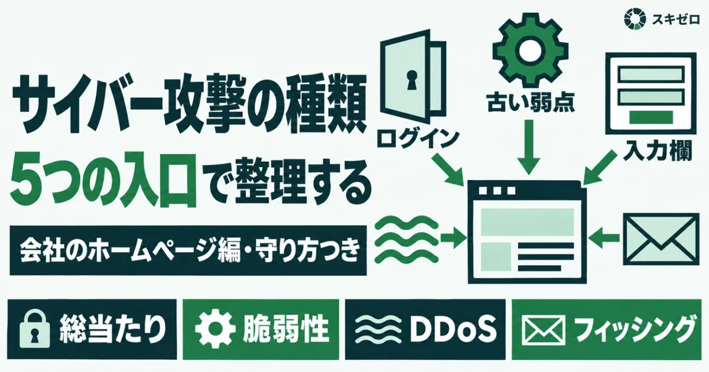
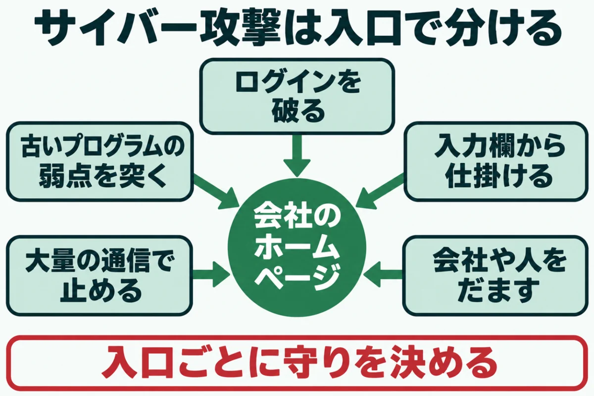
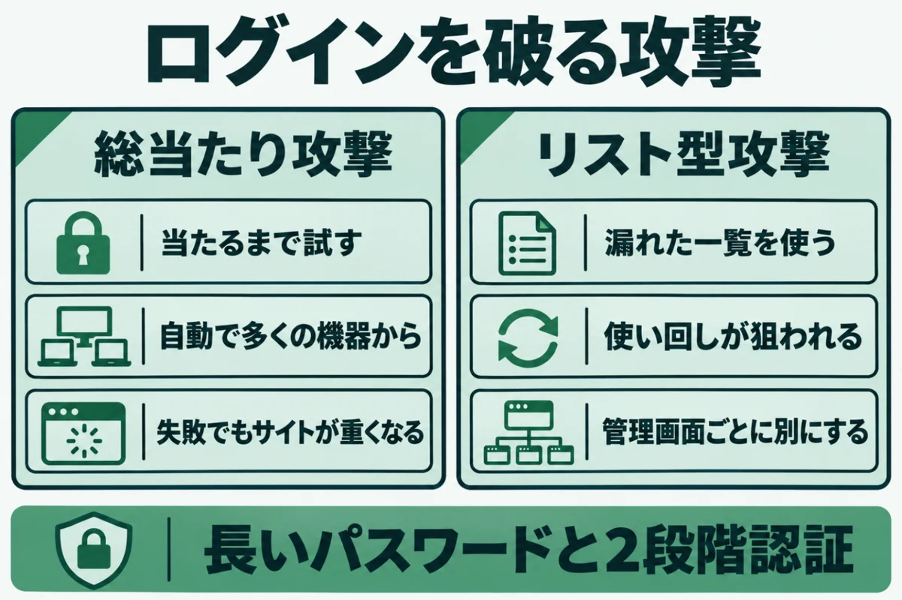
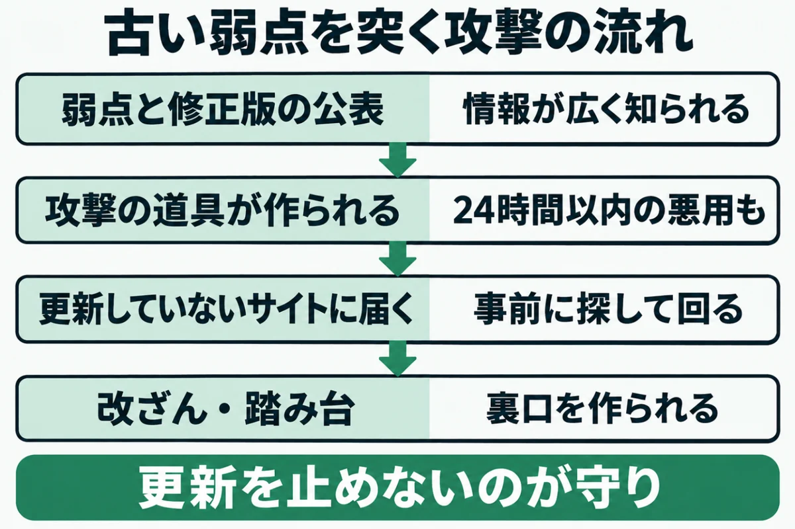
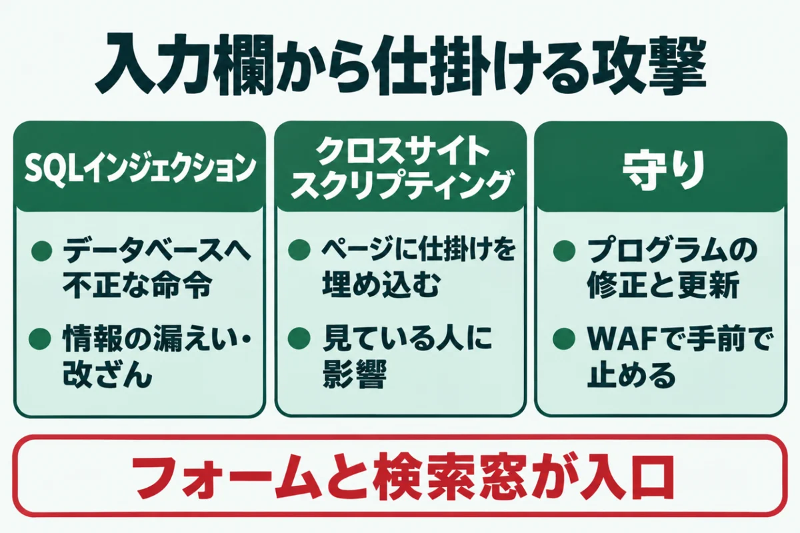
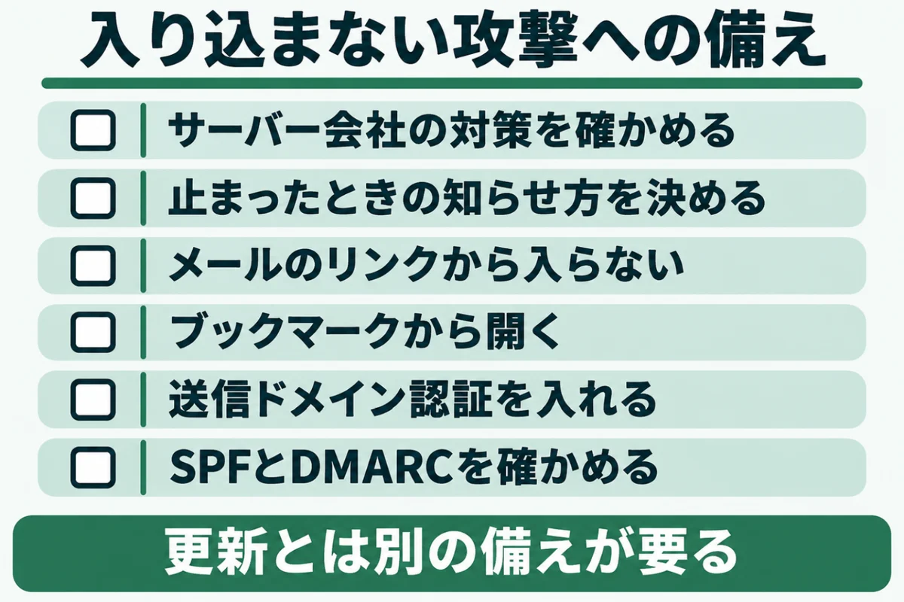

サイバー攻撃の種類をやさしく解説会社のホームページが狙われる5つの入口と守り方

サイバー攻撃は種類が多すぎて、自社のホームページに何が関係するのか迷っていませんか？
攻撃の名前はたくさんありますが、会社のホームページに届くものは限られています。名前を全部覚えなくても、どこから入ってくるかを知れば十分です。
この記事では、ホームページへの攻撃を5つの入口に分けて説明します。入口ごとに、何をされるか、何が起きるか、主な守りを短くまとめました。
内容は、IPA（情報処理推進機構）や警察庁、総務省などの公表資料で確かめています。数字には、いつの時点のものかを添えました。
サイバー攻撃の種類は、ホームページへの入口で分けると分かりやすい

サイバー攻撃の種類は、手口の名前ではなくどこから入ってくるかで分けると整理できます。入口が分かれば、ふさぐ場所も決まるからです。
WordPressの公式ドキュメントも、よくある攻撃を2つに分けています。古いプラグインなどの弱点を突く通信と、パスワードの総当たりです。この2つに、入力欄、大量の通信、人をだます手口を足して見ていきましょう。
会社のホームページへの入口は大きく5つ
入口のうち、ログインを破る、古いプログラムの弱点を突く、入力欄から仕掛ける、の3つは仲間です。どれも、サイトの中に入り込むために使われます。総務省も、侵入の手口としてパスワードの総当たりや弱点を調べる攻撃を挙げました。4つ目は、大量の通信でサイトを止める攻撃です。中には入らず、外から開けない状態にします。5つ目は、会社や人をだます手口です。サイトの外で会社の名前が使われる点が、ほかと違います。5つを表にまとめました。
| 入口 | 主な攻撃の名前 | ホームページで起きること | 主な守り |
|---|---|---|---|
| ログインを破る | 総当たり攻撃、リスト型攻撃 | 管理画面を乗っ取られる | 長く使い回さないパスワード、2段階認証 |
| 古いプログラムの弱点を突く | 脆弱性を悪用した攻撃 | 改ざん、ほかへの攻撃の踏み台 | 本体・プラグイン・PHPの更新 |
| 入力欄から仕掛ける | SQLインジェクション、クロスサイトスクリプティング | 情報の漏えい、偽のページの表示 | プログラムの修正と更新、不正な通信を止める仕組み（WAF） |
| 大量の通信で止める | DDoS攻撃 | サイトが開けなくなる | サーバー会社の対策、止まったときの知らせ方 |
| 会社や人をだます | フィッシング、なりすましメール | 偽のサイトや偽のメールに社名を使われる | リンクから入らない、送信ドメイン認証 |
公的な資料で見る、いま多い攻撃
IPAの「情報セキュリティ10大脅威 2026」は、2026年1月に公表されました。組織向けの4位が「システムの脆弱性を悪用した攻撃」です。9位に「DDoS攻撃」、10位に「ビジネスメール詐欺」が入っています。JPCERT/CCが2026年7月から9月に扱った事故や攻撃（インシデント）は8,755件でした。そのうち、フィッシングサイトが82.0%を占めます。Webサイトの改ざんは603件で、前の四半期の181件から増えました。だます手口と改ざんが、数の上でも目立っています。
ランサムウェアなど社内のパソコン側の攻撃との関係
10大脅威の1位は「ランサム攻撃による被害」です。データを暗号化して使えなくし、元に戻す対価を求めます。警察庁の2026年上半期の資料では、侵入経路の約5割がVPN機器でした。VPN機器は、社外から社内のネットワークへつなぐための装置です。レンタルサーバーに置いたホームページとは、入口が別だと分かります。ただし、改ざんされたサイトが感染の入口に使われる手口もIPAは挙げました。社内とホームページは、別々に守ってください。
- 参考：令和8年上半期におけるサイバー空間をめぐる脅威の情勢等について｜警察庁
- 参考：情報セキュリティ10大脅威 2026｜IPA 独立行政法人 情報処理推進機構
- 参考：マルウェア（ウイルス等）とは？｜総務省 国民のためのサイバーセキュリティサイト
ログインを破る種類のサイバー攻撃（総当たり・パスワードの使い回し）

ログインを破る種類のサイバー攻撃は、管理画面のIDとパスワードを当てて正面から入ります。入られると、管理者と同じ操作ができる状態です。
手口は、片っ端から試す方法と、よそで漏れたパスワードを使う方法に分かれます。IPAも、不正ログインの主な要因としてこの2つを挙げました。残る1つの要因はフィッシングで、あとの章で扱います。
総当たり攻撃（ブルートフォース）
総当たり攻撃は、ユーザー名とパスワードの組み合わせを当たるまで試します。WordPressの公式ドキュメントによると、自動で、多くの機器から分散して行われる攻撃です。失敗に終わっても、通信が多いとサイトが重くなります。よく使われる言葉を集めた辞書で試す手口も、IPAは紹介しました。守りは、長いパスワードと試行回数の制限、2段階認証の3つです。2段階認証の設定は、次の記事にまとめています。WordPressのログインに2段階認証を設定する方法｜プラグイン選びと締め出されない準備です。
パスワードの使い回しを突く攻撃（リスト型攻撃）
リスト型攻撃は、よそのサービスから漏れたIDとパスワードの一覧を使います。一覧を順に入力して、同じ組み合わせで入れるサイトを探す手口です。警察庁も、使い回しの危険を説明しています。1つ盗まれると、同じパスワードのサービスがすべて乗っ取られるという内容でした。長く複雑なパスワードでも、使い回せば破られます。WordPress、サーバー、ドメインの管理画面で、別々のものにしてください。覚えきれない分は、パスワード管理アプリに任せましょう。
古いプログラムの弱点を突く種類のサイバー攻撃（本体・プラグイン・PHP）

古いプログラムの弱点を突くサイバー攻撃は、修正版が出たあとの更新の遅れを狙う種類です。IPAの解説書によると、公表された修正の情報をもとに攻撃の道具が作られます。被害が広がりやすい例に、プラグインを含むCMSが挙がりました。CMSはホームページを管理する仕組みで、WordPressもその1つです。
攻撃する側は、弱点のあるサイトを事前に探して回ります。警察庁が検知した不審なアクセスは、2026年上半期に大きく増えました。1日・1IPアドレス当たり1万3,687件で、前年より50.7%多い数です。大部分は、海外からのアクセスでした。
WordPress本体とプラグインの弱点
セキュリティ企業のPatchstackが、2025年に見つかった弱点を集計しました。WordPressの本体の弱点は6件だけで、残りはプラグインとテーマでした。影響の大きい弱点の約半数は、公表から24時間以内に悪用されています。古い弱点も使われ続けるのです。よく狙われた上位10件のうち、2025年の公表は4件だけでした。守りは、更新を止めないことに尽きます。見つかったときの動き方は、次の記事にまとめました。WordPressのプラグインに脆弱性が見つかったときの対処法です。
土台のプログラム（PHP）とサーバーの弱点
WordPressは、PHPという土台のプログラムの上で動いています。PHPの版にはサポートの期限があり、切れた版は修正されません。PHPの公式サイトは、期限切れの版を使う人に早めの更新を勧めています。修正されない弱点にさらされるおそれがあるからです。WordPressの公式ドキュメントも、サーバー側のソフトの弱点に触れました。安定した版を使うか、信頼できるサーバー会社を選ぶよう勧めています。PHPの版は、サーバーの管理画面で確かめてください。
入られたあとに起きること（改ざん・踏み台）
弱点から入られると、何が起きるのでしょうか？総務省の説明では、ホームページの書き換えや顧客情報の持ち出しが行われます。重要なファイルを消されることもあるのです。最近は、リンクや読み込むファイルの行き先を書き換える例が増えました。訪れた人をウイルスに感染させるためです。さらに、いつでも入れる裏口（バックドア）を作られます。ほかの組織を攻撃する踏み台にもされるのです。だからこそ、更新に加えて、使っていないプラグインの削除も進めてください。
入力欄から仕掛ける種類のサイバー攻撃（SQLインジェクション・XSS）

入力欄から仕掛けるサイバー攻撃は、検索窓やフォームに細工した文字を送る種類です。プログラムの作りに穴があると、送られた文字が命令として働いてしまいます。
Webアプリの安全に取り組む団体のOWASPは、重大なリスクを10個にまとめました。2025年版では、この種類が「インジェクション」として5番目に入っています。代表は、SQLインジェクションとクロスサイトスクリプティングの2つです。
SQLインジェクション（データベースへの不正な命令）
SQLインジェクションは、データベースへの命令文に不正な文字を混ぜ込む攻撃です。IPAによると、多くのサイトは入力された内容をもとに命令文を組み立てています。組み立て方に問題があると、データベースを不正に使われるのです。起きることは、個人情報の漏えいやページの改ざんになります。パスワードなしでログインされるおそれもあるでしょう。データベースを使うサイトなら、運営者や種類を問いません。OWASPは、頻度は低いが影響が大きい弱点だと説明しました。
クロスサイトスクリプティング（ページへの仕掛けの埋め込み）
クロスサイトスクリプティング（XSS）は、ページに不正なプログラムを埋め込む攻撃です。入力された内容を画面に出す処理に問題があると、仕掛けが入り込みます。IPAは、影響はサイトを見ている利用者に及ぶと説明しました。本物のサイトの上に、偽のページが表示されるおそれがあります。ログインの状態を保つ情報を盗まれ、なりすまされることもあるのです。起きやすい場所は、入力の確認画面や検索結果、コメント欄になります。
守りはプログラムの修正と更新、そしてWAF
根本の守りは、プログラムの作りを直すことです。WordPressの本体やプラグインなら、修正は更新として届きます。自作のフォームや独自のプログラムは、制作会社に対策の状況を確かめてください。総務省は、エラーの内容をそのまま画面に出さないことも挙げました。あわせて、不正な通信を手前で止めるWAFも有効だとしています。運営者のサーバーでは、最初からあるドメインのWAFが6項目ともオフでした。手順はエックスサーバーのWAF設定のやり方と注意点｜6つの項目と誤検知の直し方にあります。
通信で止める・人をだます種類のサイバー攻撃（DDoS・フィッシング）

残る2つの入口は、サイトの中に入り込まない種類のサイバー攻撃です。DDoS攻撃は外から大量の通信を浴びせ、サイトを開けなくします。
フィッシングとなりすましメールは、会社の名前を使って人をだます手口です。どちらも、WordPressを更新するだけでは防げません。サーバー会社やメールの設定など、別の備えを足しましょう。
DDoS攻撃（大量の通信でサイトを止める）
DDoS攻撃は、多くの機器から大量のアクセスを繰り返し、サイトを使えなくします。警察庁によると、2026年2月に政府機関や交通機関などで閲覧の障害が相次ぎました。代金を払えば攻撃を請け負うサービスも確認されています。内閣サイバーセキュリティセンターは、2025年2月に注意喚起を出しました。すべてのDDoS攻撃を未然に防ぐことはできないという前提です。海外からの通信の遮断やWAFの導入が、対策に挙がっています。サーバー会社の対策と、止まったときの知らせ方を確かめてください。
フィッシング（偽のページへ誘い込む）
フィッシングは、実在する組織を装ったメールやSMSで偽のサイトへ誘い込みます。偽のサイトで、IDやパスワード、カード番号を入力させて盗む手口です。警察庁の資料によると、2026年上半期の報告件数は約73万件でした。会社のホームページには、2つの形で関係します。1つは、自社のサイトをまねた偽のサイトを作られる形です。もう1つは、担当者がだまされて管理画面のパスワードを渡す形になります。メールのリンクからログイン画面を開かないでください。ブックマークから開く習慣を付けましょう。
なりすましメール（会社の名前をかたる）
メールは、仕組みの上で送信元の名前やアドレスを簡単に偽れます。警察庁によると、経営者になりすます詐欺は2026年1月から6月で127件でした。被害額は約38億8,000万円です。受け取る側は、送金の依頼をメール以外でも確かめます。自社の名前を使わせない守りは、送信元が本物かを確かめる送信ドメイン認証です。SPFやDMARCと呼ばれる設定で、警察庁も導入の検討を勧めています。ほかの守りは、次の記事にまとめました。ホームページのセキュリティチェックリスト｜中小企業が自分で確かめる20項目です。
- 参考：フィッシング対策｜警察庁Webサイト
- 参考：令和8年上半期におけるサイバー空間をめぐる脅威の情勢等について｜警察庁
- 参考：事例16 正しい取引先に送金したはずが・・・｜総務省 国民のためのサイバーセキュリティサイト
URLを入れるだけで、WordPress本体やプラグイン、PHP、ログイン名の見え方、なりすましメールの対策など8項目を無料で判定します。読むのは公開されている情報だけで、管理画面やファイルの中は見ません。
無料で診断するサイバー攻撃の種類に関するよくある質問
個人情報を置いていないホームページでも、攻撃の対象になりますか？
対象になります。盗む情報がなくても、サイトそのものに使い道があるからです。書き換えて、訪れた人をウイルスに感染させる場所として使われます。ほかの組織を攻撃する踏み台にされることもあるでしょう。大量の通信で止める攻撃や、社名をかたるメールも、情報の有無とは関係がありません。会社案内だけのサイトでも、更新とパスワードの管理は続けてください。
ウイルス対策ソフトを入れていれば、ホームページも守られますか？
守る場所が違うので、それだけでは足りません。ウイルス対策ソフトが守るのは、社内のパソコンです。ホームページはサーバーの上にあり、更新やパスワード、WAFなどの守りが別に要ります。ただし、パソコンの守りも無関係ではありません。キーボードの入力を記録して盗むウイルスがあると、総務省は説明しています。管理画面のパスワードを盗まれないよう、両方を整えてください。
WordPressを使っていないホームページにも、関係がありますか？
関係があります。IPAは、SQLインジェクションをデータベースを使うサイト全般の問題だと説明しました。クロスサイトスクリプティングは、あらゆるサイトで注意が要るとしています。DDoS攻撃やフィッシングも、サイトの仕組みを問わずに起こるものです。違いが出るのは、古いプログラムの弱点の部分でしょう。使っている仕組みごとに、更新の方法と担当を確かめてください。
ゼロデイ攻撃や標的型攻撃は、どの種類に入りますか？
ゼロデイ攻撃は、古いプログラムの弱点を突く攻撃の仲間です。IPAは、修正の情報が公表される前の弱点を突く攻撃だと説明しています。更新だけでは間に合わない時期があるため、WAFなどの守りを重ねておきましょう。標的型攻撃は、特定の組織を狙って業務を装ったメールを送る手口です。入口で分けると、人をだます種類に入ります。新しい名前を聞いたときも、どの入口の話かを考えると整理できるでしょう。
種類が多くて手が回りません。何から始めればよいですか？
入口の広い順に、更新とパスワードから始めましょう。WordPressの公式ドキュメントが挙げる2つのよくある攻撃には、この2つで備えられます。次に、サーバーの管理画面でWAFの設定を確かめてください。そのあとで、メールのなりすまし対策と、サイトが止まったときの知らせ方を決めます。今の状態を外から知りたいときは、スキゼロの無料簡易診断も1つの方法です。URLを入れるだけで、8項目を判定します。
まとめ
サイバー攻撃の種類は多く見えますが、会社のホームページへの入口は5つに整理できます。ログイン、古いプログラム、入力欄、大量の通信、人をだます手口の5つです。
守りの中心は、更新を止めないことと、パスワードを使い回さないことになります。WAFやメールの設定、止まったときの知らせ方も、順に整えていきましょう。まずは、自社のサイトの今の状態を確かめるところから始めてください。
まずは、今の状態を知るところから。
URLを入れるだけで、数十秒で判定が出ます。登録はいりません。